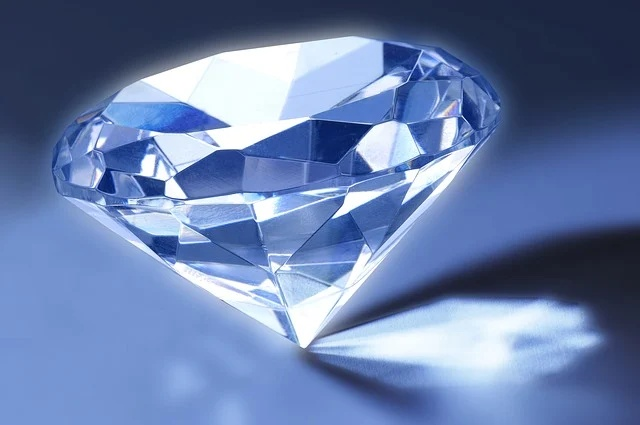

彩色鑽石·當顏色成為價值本身Fancy Color Diamonds · When Color Becomes Value Itself
The World of Gemstones · Diamond SeriesFancy Color Diamonds · When Color Becomes Value Itself
The World of Gemstones · Diamond Series彩色鑽石·當顏色成為價值本身
寶石世界·鑽石篇
寶石世界·鑽石篇（108）The World of Gemstones · Diamond Series (108)
在上一篇中，我們談到，在無色鑽石的體系裡，顏色越少，價值越高。但當我們走出這個體系，進入另一個領域時，定價規則卻發生了根本性的改變。
在這裡，顏色不再被視為缺陷，而是價值本身。這就是彩色鑽石的世界。
當一顆鑽石呈現出明顯且穩定的顏色，例如藍色、粉紅色、綠色或濃黃色時，它就不再按照 D 到 Z 的標準進行評級，而是被歸類為彩色鑽石。與無色鑽石相比，彩色鑽石的評價邏輯完全不同。
根據寶石學與礦物學的研究，彩色鑽石的顏色來源，主要與晶體內部所含的微量元素，或晶體結構本身的變化有關。不同的形成原因，會產生完全不同顏色的鑽石。
例如，黃色鑽石通常與晶體中含有少量氮元素有關。當氮原子進入晶體結構後，會吸收部分藍光，使剩餘的光呈現出黃色調。這也是為什麼黃色是彩色鑽石中相對較常見的一種。
藍色鑽石則與晶體中含有微量硼元素有關。硼的存在會改變鑽石對紅光的吸收，使鑽石呈現出深邃的藍色。這類鑽石極為稀有，其中最著名的藍色鑽石之一，就是我們後面將專門介紹的「希望藍鑽」。
而粉紅色與紅色鑽石的成因，則更加特殊。根據寶石學研究，它們顏色的來源並非來自外來元素，而是源於晶體在形成過程中產生的結構扭曲。這種極為細微的結構變化，會改變光在晶體中的傳播方式，最終呈現出粉紅或紅色的視覺效果。
在上一篇中，我們談到，在無色鑽石的體系裡，顏色越少，價值越高。但當我們走出這個體系，進入另一個領域時，定價規則卻發生了根本性的改變。
在這裡，顏色不再被視為缺陷，而是價值本身。這就是彩色鑽石的世界。
當一顆鑽石呈現出明顯且穩定的顏色，例如藍色、粉紅色、綠色或濃黃色時，它就不再按照 D 到 Z 的標準進行評級，而是被歸類為彩色鑽石。與無色鑽石相比，彩色鑽石的評價邏輯完全不同。
根據寶石學與礦物學的研究，彩色鑽石的顏色來源，主要與晶體內部所含的微量元素，或晶體結構本身的變化有關。不同的形成原因，會產生完全不同顏色的鑽石。
例如，黃色鑽石通常與晶體中含有少量氮元素有關。當氮原子進入晶體結構後，會吸收部分藍光，使剩餘的光呈現出黃色調。這也是為什麼黃色是彩色鑽石中相對較常見的一種。
藍色鑽石則與晶體中含有微量硼元素有關。硼的存在會改變鑽石對紅光的吸收，使鑽石呈現出深邃的藍色。這類鑽石極為稀有，其中最著名的藍色鑽石之一，就是我們後面將專門介紹的「希望藍鑽」。
而粉紅色與紅色鑽石的成因，則更加特殊。根據寶石學研究，它們顏色的來源並非來自外來元素，而是源於晶體在形成過程中產生的結構扭曲。這種極為細微的結構變化，會改變光在晶體中的傳播方式，最終呈現出粉紅或紅色的視覺效果。
由於這種晶體結構扭曲在自然界極為罕見，因此紅色系列鑽石，包括粉紅色鑽石，也就成為所有彩色鑽石中最為稀有的一類。
此外，綠色、橙色、紫色及黑色等彩色鑽石，也都有各自不同的形成原因與評價標準，但因篇幅所限，本篇不再逐一介紹。
在 GIA 的顏色分級體系中，彩色鑽石不使用 D 到 Z 的等級，而是依據顏色的濃度、飽和程度及視覺效果進行評價，例如 Fancy Light、Fancy、Fancy Intense、Fancy Vivid 等。
其中，Fancy Vivid 通常代表顏色最為濃郁且鮮明的等級，也是市場上最受追捧的彩色鑽石類型之一。
按照 GIA 的評估原則，在彩色鑽石的分級中，顏色的重要性通常高於其他品質因素。也就是說，在某些情況下，一顆顏色極為出色的彩色鑽石，其價值可以遠遠超過一顆無色且高淨度的鑽石。
這與無色鑽石的評價邏輯形成了鮮明的對比。
如果說無色鑽石追求的是「純淨」，那麼彩色鑽石追求的，則是「個性」。一個是減法，越少越好；一個是加法，越強越珍貴。
這樣的差異，也使彩色鑽石更具有不可預料性。每一顆彩色鑽石的顏色分布、濃度與光學表現，都可能截然不同，很難用單一標準完全概括。
正因如此，彩色鑽石往往更具收藏價值。它不僅稀有，而且往往具有鮮明而獨特的個性。一顆頂級彩鑽，往往就是世界上獨一無二的存在。
歷史上，許多著名的鑽石，其實都屬於彩色鑽石。例如深藍色的希望鑽石、鮮黃色的蒂芙尼鑽石，以及極為罕見的紅色鑽石。它們之所以被世人記住，不僅因為大小，更是因為其獨特而迷人的顏色。
顏色，使它們變得與眾不同；顏色，使它們變得獨一無二；顏色，更使它們成為天價，甚至無價之寶，成為收藏家以及具有長遠眼光的投資者最青睞的追尋目標。
回到本質，彩色鑽石的存在，其實是一種「不完美中的最完美」。那些原本被視為雜質或變形的因素，在特定條件下，反而成為極高價值的來源。
其實，這並不矛盾，而是大自然為人類提供的另一種選擇與可能。
也許可以這樣理解，在鑽石世界裡，特別是在彩色鑽石世界裡，並沒有絕對的標準。當人類改變觀察的角度、判斷的根據，原本的缺陷，也可能成為最耀眼、最有價值的特徵。
這就是彩色鑽石。它比大多數無色鑽石更加稀有，擁有更複雜的形成原因，也建立了完全不同的鑑定與分級體系。那些動輒每克拉數百萬、甚至上千萬美元的傳奇彩鑽，正是在這樣的大自然奇蹟中誕生的。
關於希望藍鑽、蒂芙尼黃鑽，以及其他世界著名彩色鑽石的傳奇故事，我們將在後面的文章中，逐一為您介紹。
（未完待續）
In the previous article, we explored why, within the world of colorless diamonds, the less color a diamond has, the more valuable it becomes. But once we step beyond that system and enter another realm, the rules of value change completely.
Here, color is no longer regarded as a flaw—it becomes value itself.
This is the fascinating world of fancy color diamonds.
When a diamond displays a distinct and stable color—such as blue, pink, green, or deep yellow—it is no longer graded on the traditional D-to-Z color scale. Instead, it enters the category of fancy color diamonds, where an entirely different grading philosophy applies.
According to gemology and mineralogy, the colors of fancy diamonds are primarily produced by trace elements within the crystal or by subtle changes in the crystal structure itself. Different geological processes create different colors.
Yellow diamonds, for example, are usually associated with small amounts of nitrogen incorporated into the crystal lattice. Nitrogen absorbs part of the blue light, leaving the remaining light with a yellow appearance. This is why yellow is one of the more common colors among fancy diamonds.
Blue diamonds, on the other hand, owe their color to trace amounts of boron. Boron alters the diamond's absorption of red light, giving it its deep and captivating blue color. These diamonds are exceptionally rare. Among them, one of the most famous is the Hope Diamond, which we will introduce in detail later in this series.
In the previous article, we explored why, within the world of colorless diamonds, the less color a diamond has, the more valuable it becomes. But once we step beyond that system and enter another realm, the rules of value change completely.
Here, color is no longer regarded as a flaw—it becomes value itself.
This is the fascinating world of fancy color diamonds.
When a diamond displays a distinct and stable color—such as blue, pink, green, or deep yellow—it is no longer graded on the traditional D-to-Z color scale. Instead, it enters the category of fancy color diamonds, where an entirely different grading philosophy applies.
According to gemology and mineralogy, the colors of fancy diamonds are primarily produced by trace elements within the crystal or by subtle changes in the crystal structure itself. Different geological processes create different colors.
Yellow diamonds, for example, are usually associated with small amounts of nitrogen incorporated into the crystal lattice. Nitrogen absorbs part of the blue light, leaving the remaining light with a yellow appearance. This is why yellow is one of the more common colors among fancy diamonds.
Blue diamonds, on the other hand, owe their color to trace amounts of boron. Boron alters the diamond's absorption of red light, giving it its deep and captivating blue color. These diamonds are exceptionally rare. Among them, one of the most famous is the Hope Diamond, which we will introduce in detail later in this series.
Pink and red diamonds are even more extraordinary. Their colors are generally not produced by foreign elements but by distortions within the crystal structure itself during the diamond’s formation. These microscopic structural changes alter the way light travels through the crystal, producing beautiful pink or red hues.
Because this type of crystal distortion is extremely rare in nature, red diamonds—and even pink diamonds—are among the rarest of all fancy color diamonds.
In addition, green, orange, purple, black, and several other fancy colors each have their own unique origins and grading criteria. Since our focus here is on the general principles, we will explore these colors individually in future articles.
Within the GIA grading system, fancy color diamonds are not evaluated using the D-to-Z scale. Instead, they are graded according to the strength and visual impact of their color, using descriptions such as Fancy Light, Fancy, Fancy Intense, and Fancy Vivid.
Among these, Fancy Vivid usually represents the strongest, richest, and most saturated color, making it one of the most desirable categories in today's diamond market.
According to GIA standards, color is typically the most important factor in evaluating a fancy color diamond. Under certain circumstances, a diamond with an exceptional color may be worth far more than a colorless diamond with outstanding clarity.
This is a striking contrast to the grading philosophy applied to colorless diamonds.
If colorless diamonds pursue purity, fancy color diamonds celebrate individuality.
One is a process of subtraction—the less color, the better.
The other is a process of addition—the stronger and richer the color, the more valuable it may become.
This difference also makes fancy diamonds far less predictable. Every stone possesses its own unique combination of color distribution, saturation, and optical appearance, making it difficult to judge them by any single standard.
For this reason, fancy color diamonds are often considered highly collectible. They are not only rare but also possess remarkably distinctive personalities. A truly exceptional fancy diamond is often unlike any other stone in the world.
Many of history's most celebrated diamonds are, in fact, fancy color diamonds. Among them are the deep-blue Hope Diamond, the brilliant yellow Tiffany Diamond, and extraordinarily rare red diamonds. They are remembered not simply because of their size, but because of their unforgettable colors.
Color makes them different; color makes them unique. And color transforms them into treasures worth extraordinary fortunes—or, in some cases, beyond price itself—making them lifelong pursuits for collectors and investors with true vision.
At its heart, the existence of fancy color diamonds represents perfection born from imperfection. Features once regarded as impurities or structural irregularities can, under the right circumstances, become the very source of extraordinary value.
In reality, there is no contradiction. It is simply another possibility that nature has offered to humanity.
Perhaps this is the best way to understand the world of diamonds—especially the world of fancy color diamonds.
There is no absolute standard.
When people change the way they observe, and when the criteria by which they judge are transformed, what once appeared to be a flaw may become the most brilliant—and the most valuable—characteristic of all.
That is the remarkable world of fancy color diamonds.
They are rarer than most colorless diamonds, formed through more complex geological processes, and evaluated under an entirely different grading philosophy. Legendary stones worth millions—or even tens of millions of dollars per carat—are born from these extraordinary miracles of nature.
In the articles ahead, we will introduce the fascinating stories behind the Hope Diamond, the Tiffany Yellow Diamond, and many other world-famous fancy color diamonds, one by one.
(To be continued)